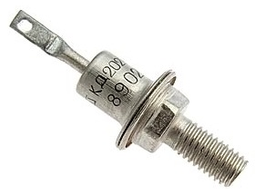
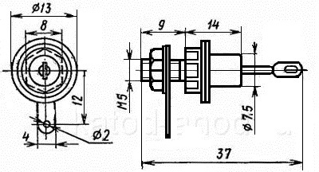

Диоды КД202
(КД202А-КД202С)
Диод КД202 (2Д202) - диффузионный, кремниевый. Используется в основном как основной элемент при преобразовании переменного напряжения. Граничная частота - 5 кГц. Имеет металлостеклянный корпус. Выводы - жёсткие. На корпусе диода нанесена его цоколёвка и тип. Весит диод около 5 г., а с комплектующими - около 7 г.


Рис. 1 - Внешний вид и размеры диода КД202
Таблица 1
| Прямое напряжение (среднее) | 1 В |
| Обратный ток (средний) | |
| 2Д202В, 2Д202Д, 2Д202Ж, 2Д202К, 2Д202М, 2Д202Р | 1 мА |
| КД202А, КД202В, КД202Д, КД202Ж, КД202К, КД202М, КД202Р | 0,8 мА |
| Обратное напряжение (импульсное) | |
| КД202А | 50 В |
| КД202В, 2Д202В | 100 В |
| КД202Д, 2Д202Д | 200 В |
| КД202Ж, 2Д202Ж | 300 В |
| КД202К, 2Д202К | 400 В |
| КД202М, 2Д202М | 500 В |
| КД202Р, 2Д202Р | 600 В |
| Прямой ток (постоянный) или выпрямленный ток (средний) | 100 мА |
| Прямой ток (постоянный, средний) | 5 А |
| Рабочая температура | -60...+130°C |